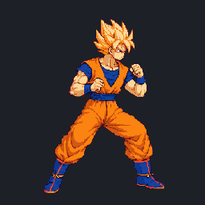
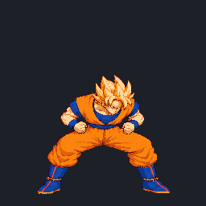
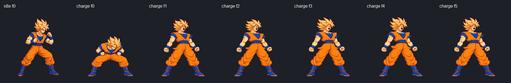
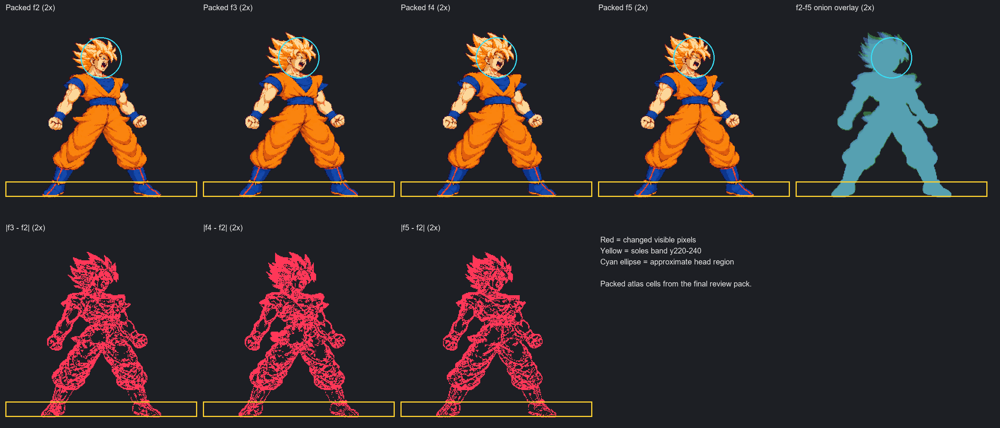
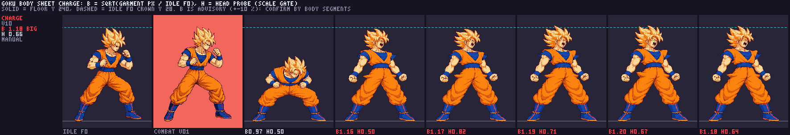

Current approved v05 · 50 ms per frame

Extracted from the 5156b17d main atlas, the version this candidate replaces.
ART-CHARGE · Goku pilot · packed candidate v10
Review the current approved charge (v05) beside the six-frame candidate (v10). The new timing plays gather and release once, then loops f2–f5 at 110 ms. The GIF runs the held loop four times and pauses.

Extracted from the 5156b17d main atlas, the version this candidate replaces.

Packed cells from the 48-color candidate atlas. This GIF plays f0, f1, f2–f5 four times, then pauses.
The idle f0 reference is first, followed by charge f0–f5. Both rows use the same packed cells and pixel density.

Packed f2–f5 at 2×, a tinted onion overlay, and pixel differences against f2. Yellow marks y220–240; cyan marks an approximate head region.

B compares garment area against idle f0. The tool labels B as advisory (about ±10% pose noise); a high value needs segment confirmation.

Machine-readable body report · Full provenance and Astra evidence
Interactive lab playback was not independently checked because Windows browser automation could not confirm the browser URL; the linked lab route uses the packed candidate and configured loop timing. The user’s drawing approval covers v10 as drawn only. It does not clear the loop/body technical holds or complete gameplay integration.